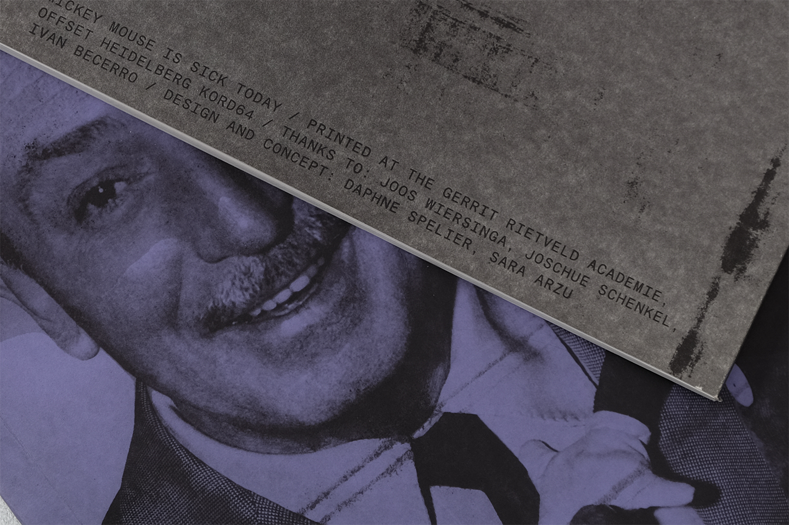
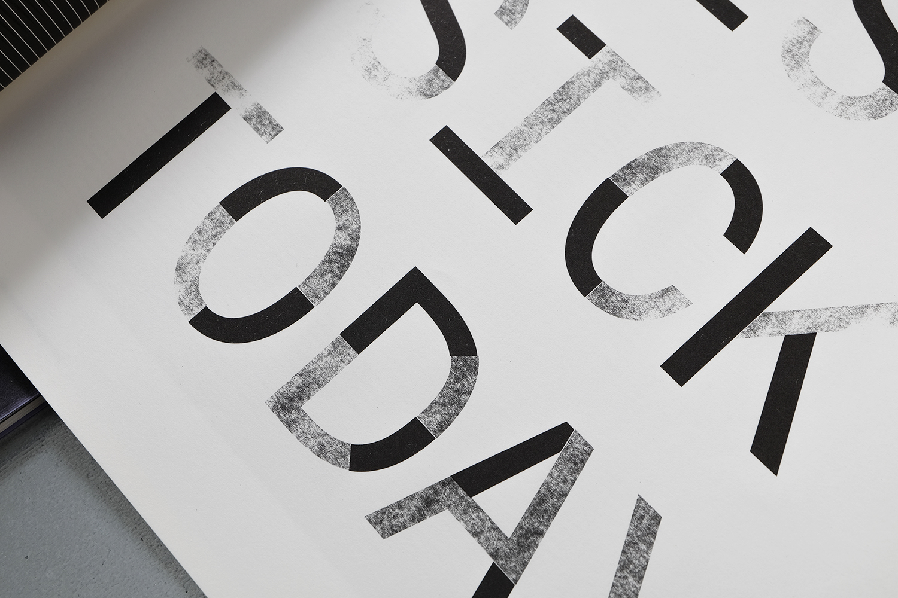
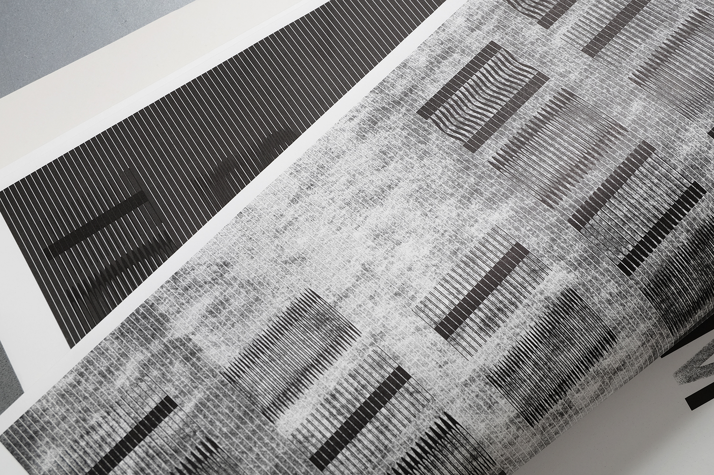
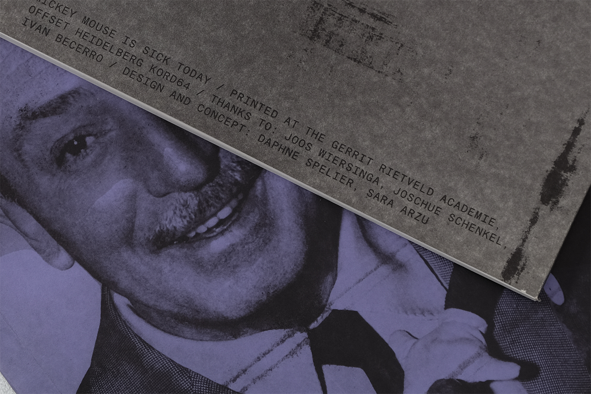
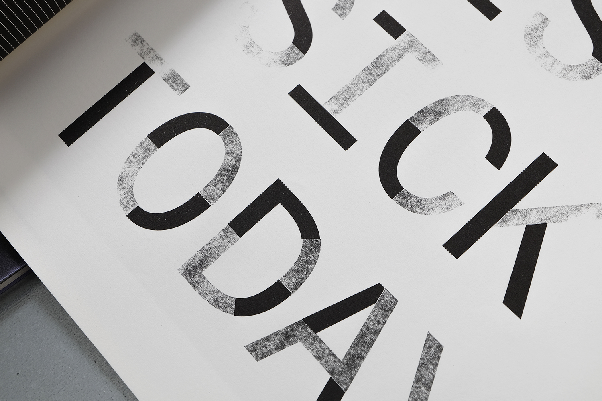
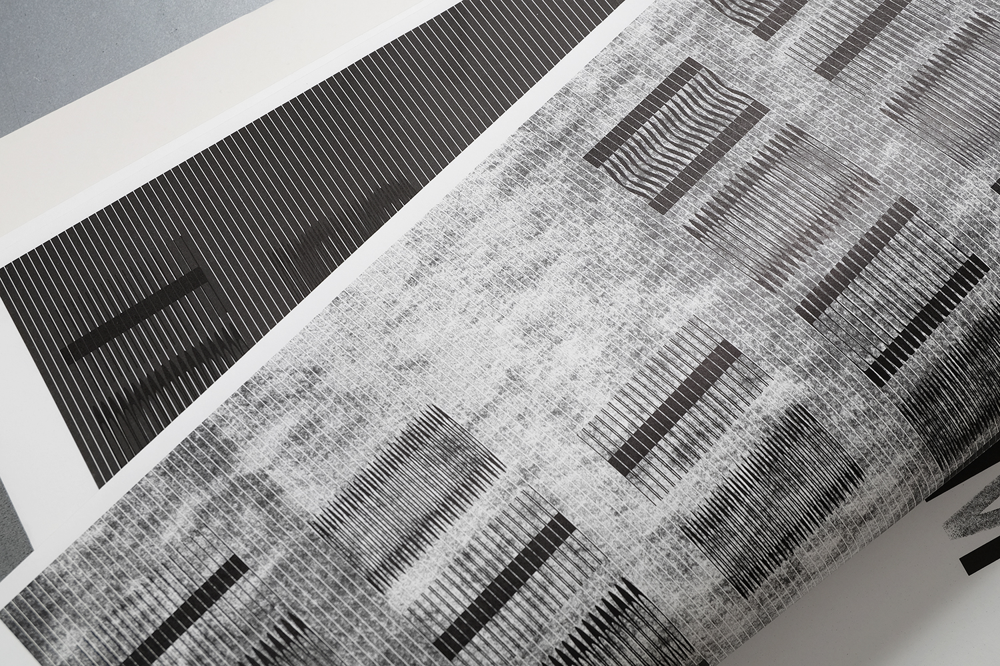

MEMOIRS TO BUTTONS
2017
Playing with an element of daily life on the verge of disappearing and already nostalgic, the audience is left to imagine what those images might have looked like.
MICKEY MOUSE IS SICK TODAY
2016
An interactive experiment with the offset printing process. Pushing the machine to its limits to create various outcomes within one design. In collaboration with Sara Hardegger.
 





GRADUATION SHOW CAMPAIN 2016
2016
Gerrit Rietveld Academie graduation show 2016 campaign design. Campaign included various print and digital media as well as merchandise. In collaboration with Medeina Musteikyte and Marie Hoejlund.


THE APPEARENCE OF DISAPPEARANCE
2016
These projects explore different ways of printing and erasing by dissecting the various techniques within print. A tension arises with what is absent and present, and explores the contradiction of absence: What is erased becomes even more pronounced — the appearance of disappearance.